Now that you have GitHub Desktop and python installed locally, you should create a new GitHub repository and Jupyter
Notebook for each assignment (except for your Project Assignments - each Project should have its own repo). This
lesson will walk you through creating a new repository and notebook with annotated screenshots.
Reference Slides
Additionally, please bookmark these reference slides for a summary of the workflow for creating and working in Jupyter
notebooks and GitHub desktop. You will want to refer back to this regularly as you get used to working on your
local computer.
GitHub Desktop Keyboard Shortcuts
GitHub Desktop has many convenient keyboard shortcuts. The select list below is worth learning!
Open GitHub Desktop and click on the drop-down menu next to the "Current Repository" in the top-left
of the app.
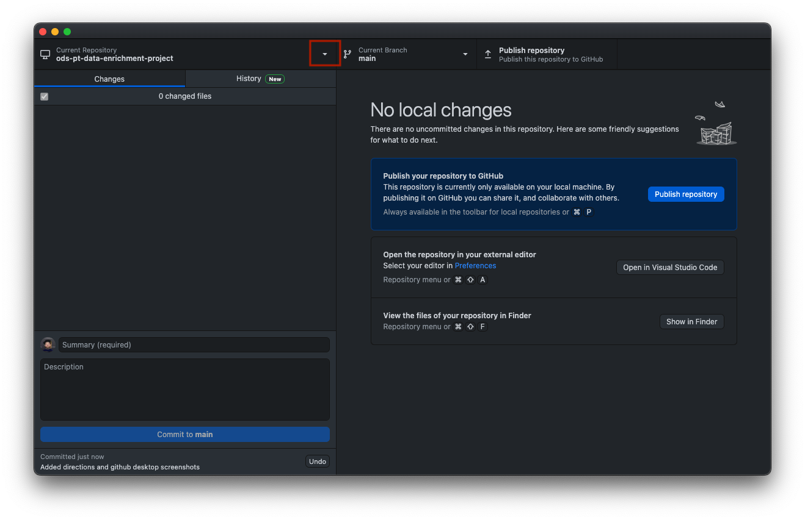
Select the "Add" button next to the search bar 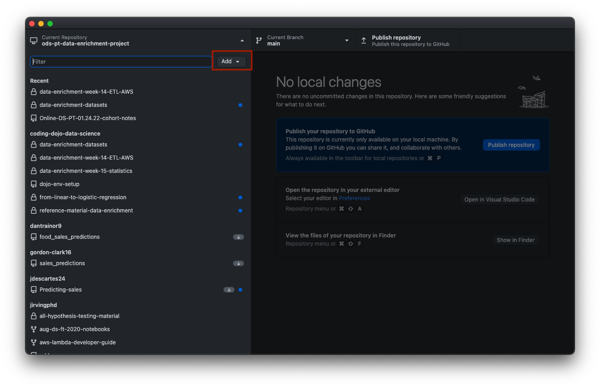
Select "Create New Repository" from the menu that appears. 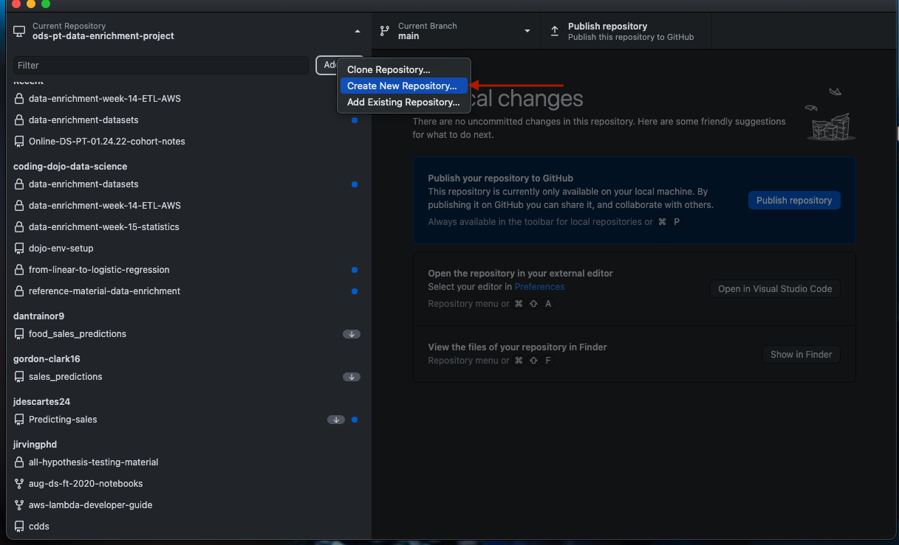
A pop-up window will appear with several fields/options.
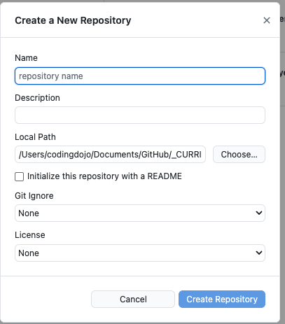
Add a Name for the repository.
Repo names must be unique.
Use a descriptive name.
Description is optional.
Use the Choose button to select an alternative filepath for the repo.
By default, GitHub Desktop saves repo's to a GitHub
folder inside of your Documents folder.
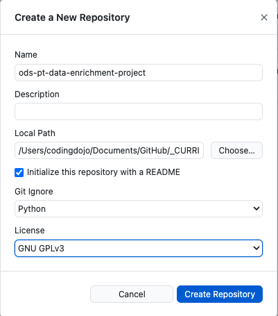
Make sure to:
Check "initialize this repository with a README"
Select "Python" from the Git Ignore dropdown menu.
Select a license (GNU GPLv3 allows others to use your code for any open-source
project. It cannot be used in a closed source package.)
Click "Create Repository".
You should see the main pane of the app change to look like the image below.
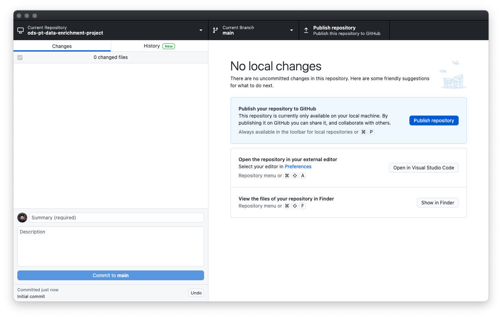
Open the Repository with Jupyter Notebook
While it is ultimately up to you if you would rather use Jupyter Notebooks or VS Code, we will walk
through the Jupyter Notebook instructions.
Click on the "Repository" menu on the menu bar.
Select Open in Terminal(/GitBash for Windows)
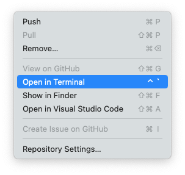
You should now have a new terminal open inside of the same folder as your repo.
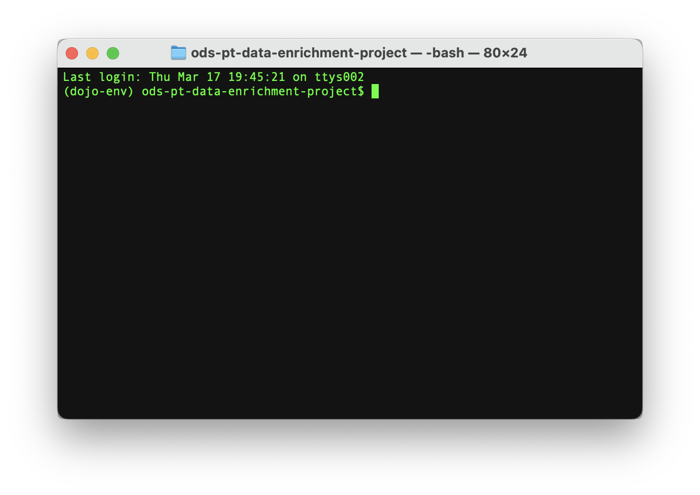
Start Jupyter Notebook by entering jupyter notebook in your terminal.
If you followed the full Local Python Installation instructions, you should be able
to jnb instead of the entire phrase.
Your terminal should then start the server for Jupyter Notebook and a new web browser tab should
open. 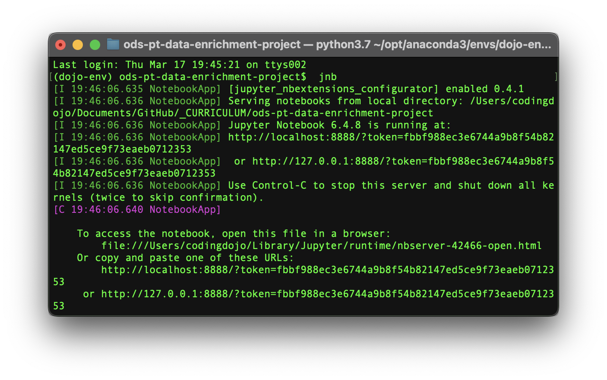
Click on the "New" button on the top-right of the Jupyter Notebook file browser page. 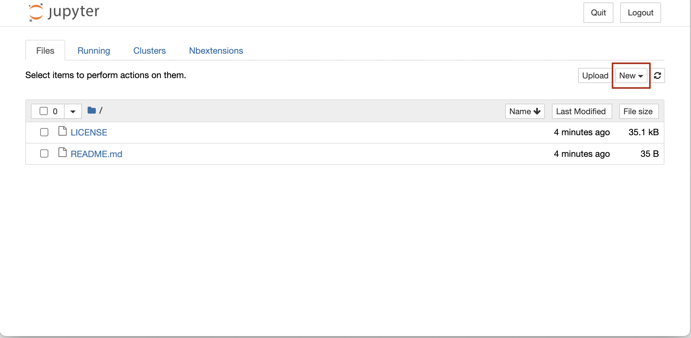
You should see Python (dojo-env) as an option in the dropdown menu.
Select it and a new blank "Untitled" notebook should open.
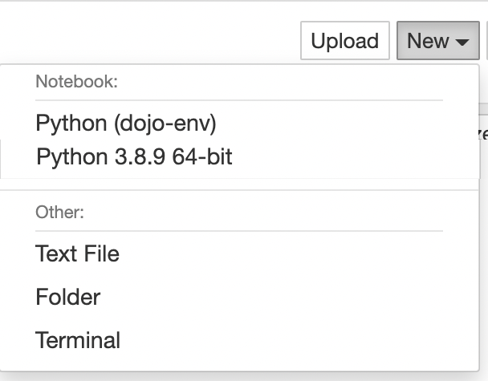
Click on the word "Untitled" and enter a more appropriate title, like "Sakila-Core"
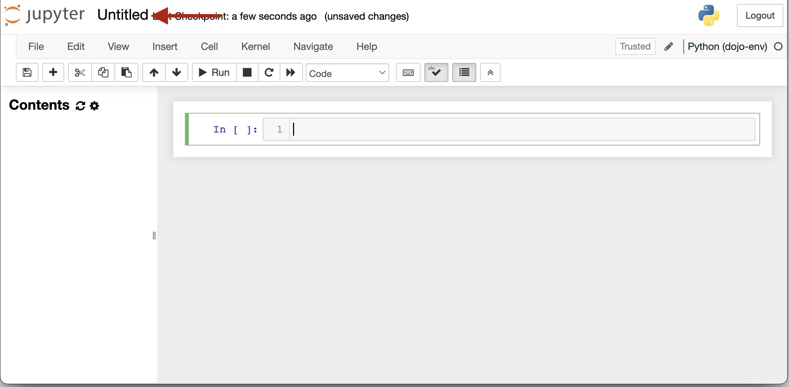
Commit Changes with GitHub Desktop
Hop back to GitHub desktop and notice that the main display has changed. It should be showing that
you have created a new file. 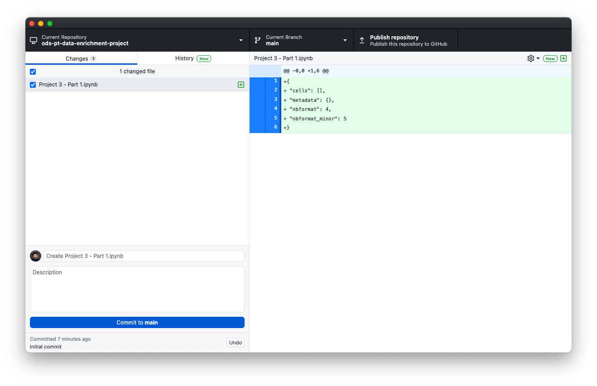
Commit your work thus far, by entering a message in the Message box in the lower left corner.
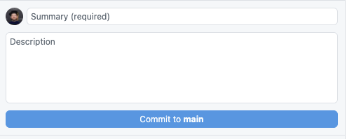
After entering your commit message, click "Commit to main" 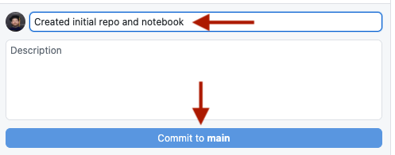
Finally, click on "Publish repository" at the top of the window. 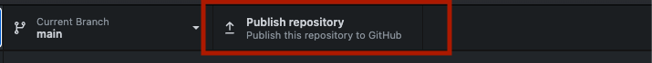
As you continue to work in your notebook, you will want to save it and commit the changes to this repository.
More commits is better than less! This ensures your most up to date work is saved!